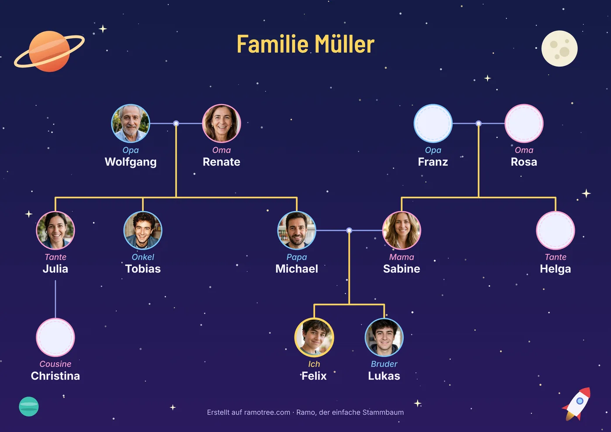

Stammbaum für Kinder: so klappt es für die Schule
„Morgen müssen wir den Stammbaum mitbringen.“ Kommt dir das bekannt vor? Hier gibt es eine kostenlose Vorlage zum Ausdrucken, Ideen, damit er schön wird, und wie du ihn ohne Stress mit deinem Kind machst.
In ein paar Minuten fertig: Erstellt euren Stammbaum hier, mit Namen und Fotos oder mit Platz zum Malen, und ladet ihn zum Ausdrucken herunter.

Was die Schule meistens verlangt
In Kita und Grundschule ist es meistens ein Stammbaum mit drei Generationen: das Kind, die Eltern und die Großeltern, mit einem Foto oder einem Bild von jedem. Später kommen manchmal Urgroßeltern, Onkel, Tanten und Cousins dazu, oder er soll auf Englisch sein, um die Familienwörter zu üben.
Schritt für Schritt mit deinem Kind
- Lass es selbst fragen. Ein Anruf oder Besuch bei Oma und Opa: Wie heißt ihr, wo seid ihr geboren, wie wart ihr als Kinder? Daran erinnern sich Kinder am meisten.
- Fotos oder Bilder. Druck kleine Fotos aus oder lass dein Kind jeden in sein Feld malen.
- Füll die Vorlage aus. Die Namen in Schönschrift und, wenn Platz ist, das Geburtsjahr.
- Gestalte ihn. Kleb ihn auf Karton, mal einen Stamm und eine Krone, oder mach die Blätter aus seinen Handabdrücken.
Ideen, damit er schön wird
- Ein Plakat mit einem gemalten Baum und den Fotos auf den Blättern.
- Ein Ast für jede Seite der Familie, jeder in einer Farbe.
- Ihn auf dem Handy mit Ramo machen und ausgedruckt mitbringen: Er kommt mit dem Foto von jedem, in A4 oder A3, und lässt sich groß ausdrucken, um ihn im Klassenzimmer aufzuhängen.
Wenn die Familie nicht in die Vorlage passt
Getrennte Eltern, Patchworkfamilien, Adoption, zwei Mamas oder zwei Papas, Großeltern, die nicht mehr da sind… Die Vorlage ist nur ein Anfang: Streich durch, ergänze Felder oder mal neue Äste. Wichtig ist, dass das Kind seine Familie darin wiedererkennt. In Ramo kann jede Person mehrere Partner haben, und der Stammbaum ordnet sich selbst.
Die Familie auf Englisch
Falls der Stammbaum auf Englisch sein soll („My family tree“):
| Deutsch | Englisch |
|---|---|
| Vater, Mutter (Papa, Mama) | father, mother (dad, mum oder mom) |
| Eltern | parents |
| Bruder, Schwester | brother, sister |
| Großvater, Großmutter (Opa, Oma) | grandfather, grandmother (grandpa, grandma) |
| Großeltern | grandparents |
| Urgroßvater, Urgroßmutter | great-grandfather, great-grandmother |
| Onkel, Tante | uncle, aunt |
| Cousin, Cousine | cousin |
| Sohn, Tochter | son, daughter |
| Enkel, Enkelin | grandson, granddaughter |
| Ehemann, Ehefrau | husband, wife |
Zum Vorstellen: „This is my grandmother. Her name is Ursula.“ Und wenn eine knifflige Verwandtschaft auftaucht, erklärt sie der Verwandtschaftsrechner.
Weitere Ratgeber